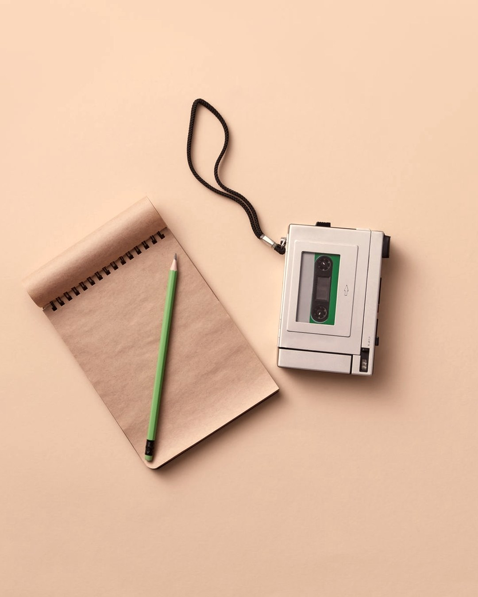
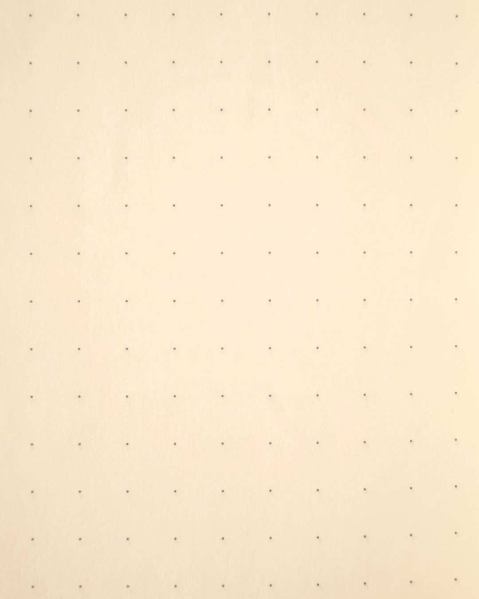
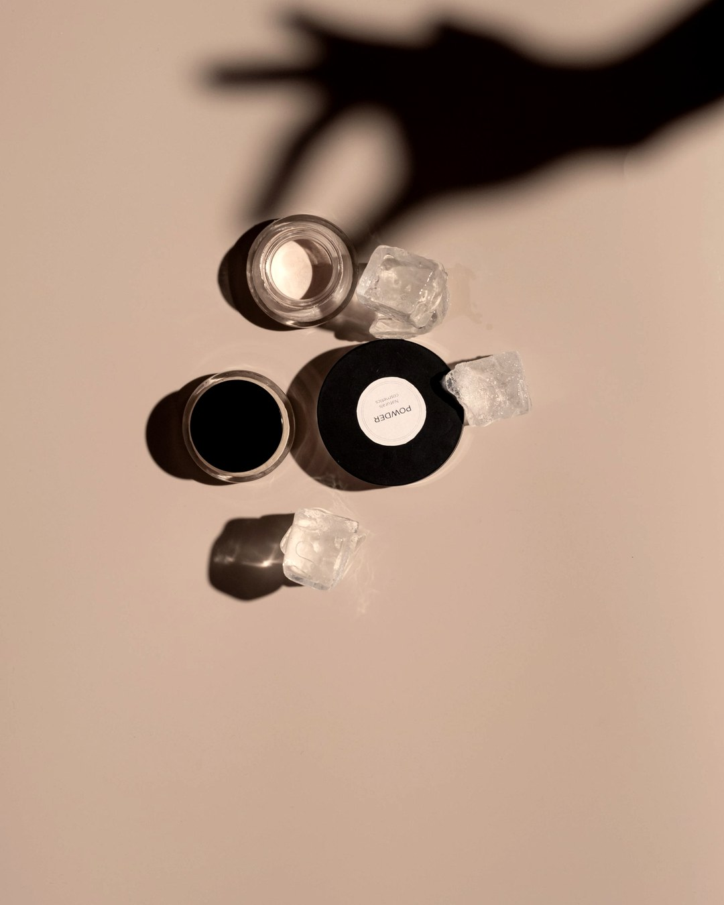
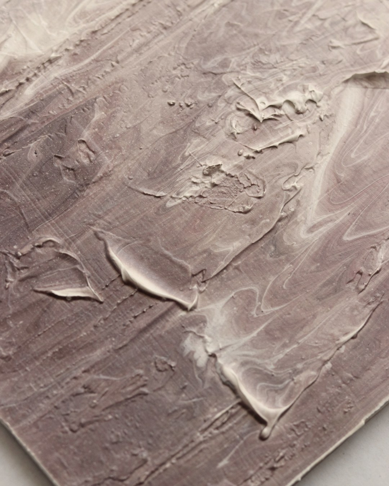
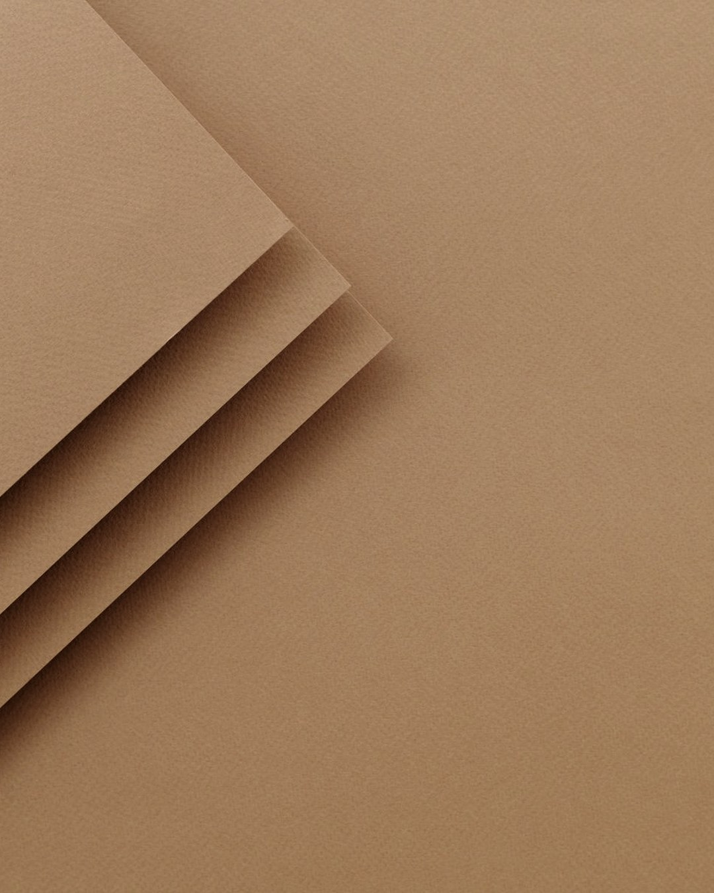
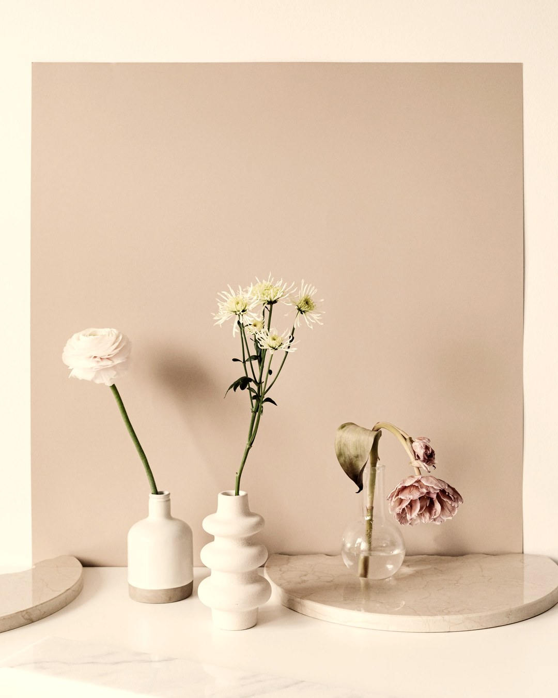
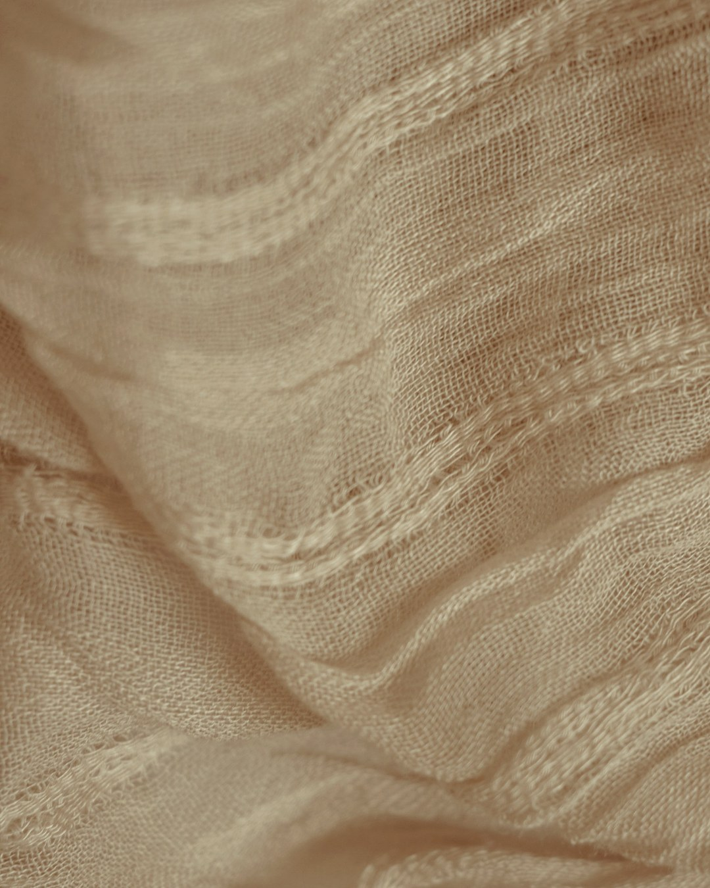

직접 물어봤습니다. 50대 24명 · 40대 4명.「쓰는 중에 불편한 것」 1위가「효과가 있는 건지 없는 건지 모르겠다」였어요.
2026년 8월 자체 설문 · 32명

23명(72%)이 효과를 모르겠다고 답했어요.「딱히 없다」는 6명뿐이었습니다.고르는 단계보다 쓰는 단계가 더 아팠습니다.

다 못 쓰고 버리거나 방치한 적이 있다 — 18명(56%).이유는 「안 맞아서」가 가장 많았어요.효과를 모르면 계속 쓸 이유도 사라집니다.

좋아졌는지 재는 방법을 배운 적이 없어요.느낌으로만 보면 그날 컨디션이 판정을 대신합니다.기준 세 개면 충분합니다.

같은 조명 · 같은 시간 · 같은 각도.아침 세수 전이 제일 낫습니다.기억은 지고 사진은 이겨요.

두 개를 같이 바꾸면 좋아져도 뭐 때문인지 모릅니다.2주에 하나면 원인이 남습니다.

각질 주기가 길어진 만큼 결과도 늦게 나와요.대신 따갑거나 붉어지는 건 기다리지 않고 바로 판정합니다.
오늘 사진 한 장부터 찍어두세요.저장해두고 12주 뒤에 꺼내 보시면 됩니다.
당신이 푸르렀던 그 시절로
RE:BEAUTY